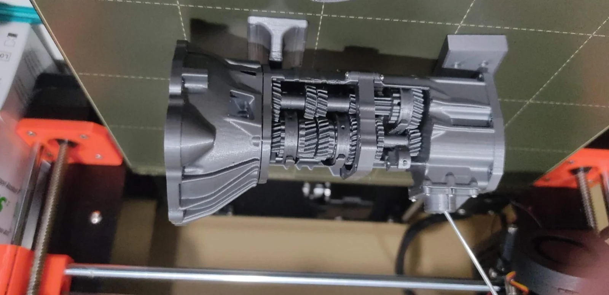
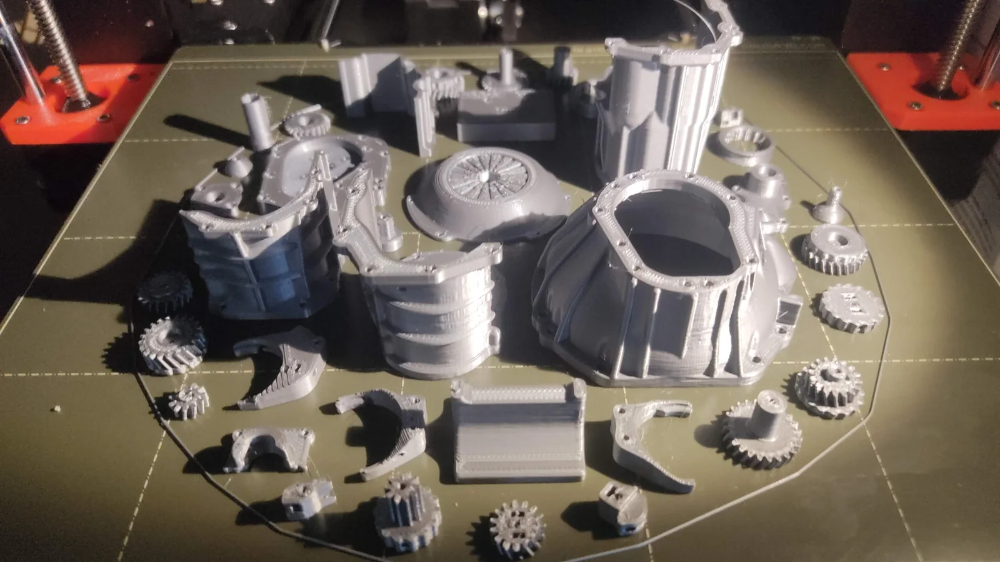
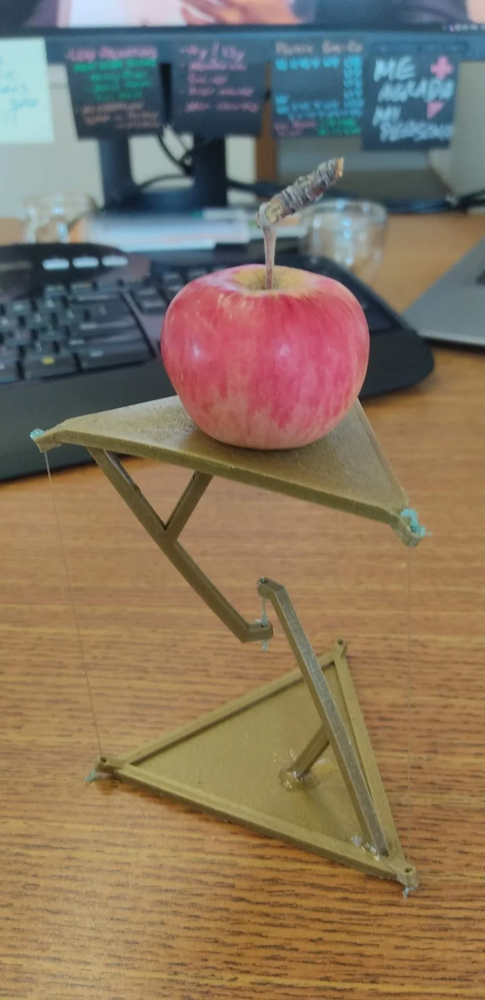
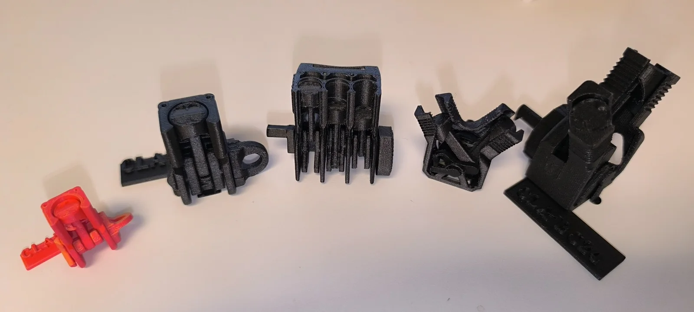
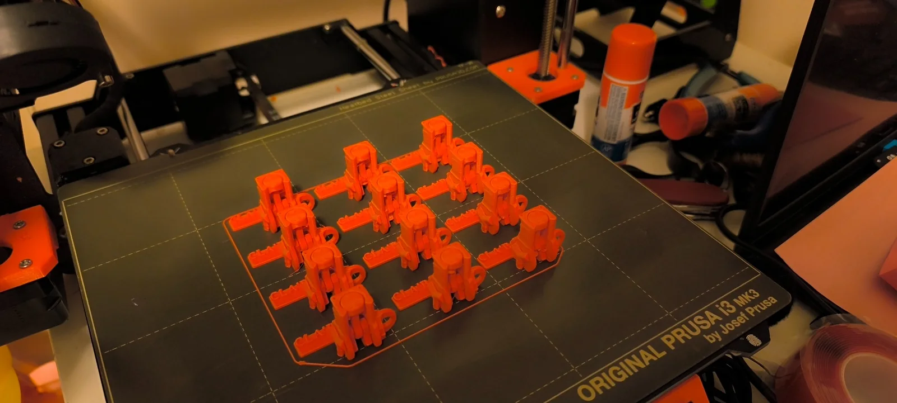
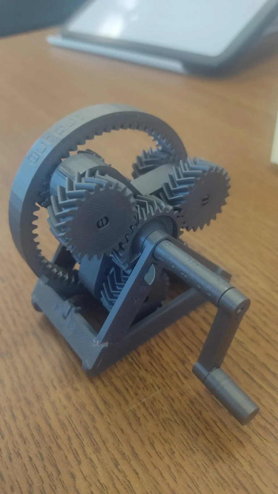

Ideas you can hold.
A hands-on portfolio of mechanical demonstrations, 3D-printed gearboxes, balancing mechanisms and rapid prototypes. From CAD concepts to physical objects — exploring how complex assemblies come to life.

From curiosity to tangible engineering
Not everything starts with a business case. Sometimes the most useful learning comes from building a mechanism, finding the tolerances that matter and watching the components actually move.
Concept & design
Visualize a mechanical concept, consider motion and interfaces, and prepare geometry for fabrication.
Print & iterate
Translate designs into layers, inspect fit, explore tolerances and test individual parts.
Assemble & demonstrate
Bring moving parts together to make mechanical principles visible, tactile and memorable.
Printed in the real world
An editorial gallery with different visual scales, deliberately showing the original objects, printing environment and details. The horizontal gearbox image is rotated from your source photograph; its geometry is not replaced by an AI reconstruction.







Gallery: user-supplied authentic photographs. Some images are gently resized and rotated for web display; no mechanical design or physical-test claims are inferred.
Physical models make learning tangible.
3D-printed objects also appear in the Todos Volvemos Seguros safety facilitation material. They are prompts for engagement, conversation and reflection — not certified protective devices.